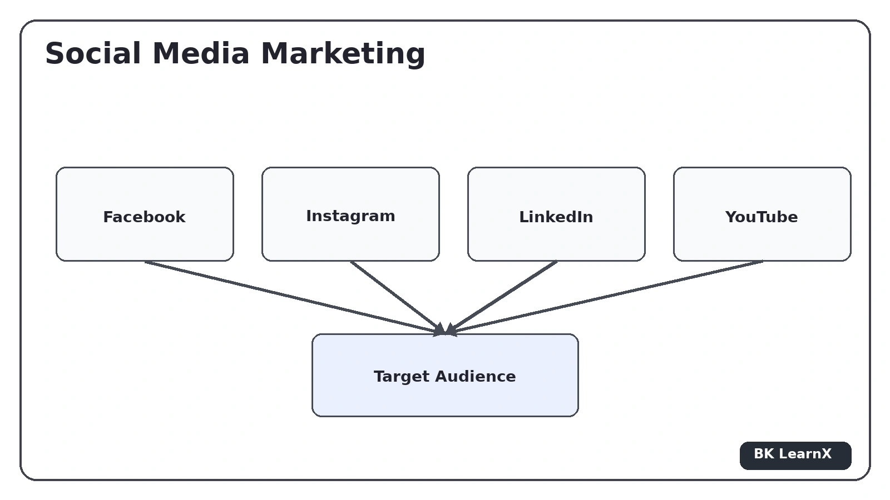

Principles of Digital Marketing
Digital Marketing
Digital Marketing एक ऐसी Marketing Process है जिसमें Internet, Computer, Mobile Devices, Search Engines, Social Media, Email, Websites तथा अन्य Digital Channels का उपयोग करके Products, Services या Brands को Promote किया जाता है।
Traditional Marketing में Newspaper, Television, Radio, Posters, Banners तथा Physical Advertising जैसे माध्यमों का उपयोग किया जाता है, जबकि Digital Marketing में Internet और Digital Platforms की सहायता से Target Audience तक पहुँचा जाता है।
Digital Marketing का मुख्य उद्देश्य केवल Advertisement करना नहीं है, बल्कि सही Customer तक सही Message पहुँचाना, Brand Awareness बढ़ाना, Website Traffic प्राप्त करना, Leads Generate करना तथा अंत में Sales और Business Growth प्राप्त करना है।
Digital Marketing की एक महत्वपूर्ण विशेषता यह है कि इसके Results को Digital Tools तथा Analytics की सहायता से Measure किया जा सकता है। Marketer यह देख सकता है कि कितने लोगों ने Advertisement देखा, कितने लोगों ने Website पर Visit किया, कितने Users ने Form भरा तथा कितने Customers ने Purchase किया।
Definition
Definition:
"Digital Marketing वह प्रक्रिया है जिसमें Digital Channels,
Internet तथा Online Platforms का उपयोग करके Products,
Services या Brands को Target Customers तक Promote किया जाता है।"
Digital Marketing को Online Marketing भी कहा जाता है। इसमें SEO, SEM, Social Media Marketing, Content Marketing, Email Marketing, Video Marketing तथा Digital Advertising जैसी विभिन्न Techniques का उपयोग किया जाता है।
Main Characteristics of Digital Marketing
- Global Reach: Internet की सहायता से Business दुनिया के अलग-अलग क्षेत्रों में Customers तक पहुँच सकता है।
- Targeted Marketing: Audience को Location, Interest, Demographics तथा Behaviour के आधार पर Target किया जा सकता है।
- Cost Effective: कई Digital Campaigns को Traditional Advertising की तुलना में नियंत्रित Budget में चलाया जा सकता है।
- Measurable Results: Website Traffic, Clicks, Leads और Conversions को Measure किया जा सकता है।
- Real-Time Communication: Business Customer के साथ जल्दी Communication कर सकता है।
- Customer Engagement: Social Media, Comments, Messages और Reviews के माध्यम से Customers के साथ Interaction किया जा सकता है।
Major Components of Digital Marketing
- Search Engine Optimization (SEO)
- Search Engine Marketing (SEM)
- Social Media Marketing
- Display Advertising
- Content Marketing
- Blogging
- Lead Generation
- Email Marketing
- Video Marketing
- Responsive Design
- Google Analytics
Advantages of Digital Marketing
- Large Audience तक आसानी से पहुँचा जा सकता है।
- Target Audience को specific तरीके से Select किया जा सकता है।
- Campaign Performance को Measure किया जा सकता है।
- Customer Engagement बढ़ाया जा सकता है।
- Marketing Campaign को जल्दी Update किया जा सकता है।
- Leads और Sales Generate करने में सहायता मिलती है।
यदि कोई Online Education Company Google पर अपने Course का Advertisement दिखाती है, Instagram पर Educational Videos डालती है, Website पर Blog Publish करती है और Students को Email भेजती है, तो ये सभी Digital Marketing के उदाहरण हैं।
Setting Digital Marketing Objectives
किसी भी Digital Marketing Campaign को Start करने से पहले उसके Objectives अर्थात Goals को निर्धारित करना बहुत आवश्यक होता है। Objective यह बताता है कि Business अपनी Digital Marketing Activities के माध्यम से क्या प्राप्त करना चाहता है।
यदि Objective स्पष्ट नहीं है, तो Marketer यह निर्धारित नहीं कर सकता कि कौन-सा Digital Channel उपयोग करना चाहिए, कितना Budget खर्च करना चाहिए और Campaign Successful है या नहीं। इसलिए Digital Marketing Strategy बनाने से पहले Clear, Measurable और Achievable Objectives निर्धारित किए जाते हैं।
Common Digital Marketing Objectives
-
Increase Brand Awareness
अधिक से अधिक लोगों तक Brand की जानकारी पहुँचाना। -
Increase Website Traffic
Search Engines, Social Media तथा Advertisements से Website पर अधिक Visitors लाना। -
Generate Leads
Potential Customers से Name, Email, Phone Number जैसी Information प्राप्त करना। -
Increase Sales
Online Marketing के माध्यम से Products या Services की Sales बढ़ाना। -
Improve Customer Engagement
Customers को Content, Social Media और Communication के माध्यम से Brand के साथ जोड़ना। -
Increase Conversion Rate
Website Visitors में से अधिक Users को Customers में Convert करना। -
Customer Retention
Existing Customers को बनाए रखना और उन्हें दोबारा Purchase के लिए Encourage करना।
SMART Objectives
Digital Marketing Objectives को निर्धारित करते समय SMART approach उपयोगी होती है।
| Letter | Meaning | Description |
|---|---|---|
| S | Specific | Goal स्पष्ट और निश्चित होना चाहिए। |
| M | Measurable | Goal को Numbers या Metrics से Measure किया जा सके। |
| A | Achievable | Goal Practical और प्राप्त करने योग्य होना चाहिए। |
| R | Relevant | Goal Business की आवश्यकता से संबंधित होना चाहिए। |
| T | Time-Bound | Goal के लिए निश्चित Time Period होना चाहिए। |
Steps for Setting Digital Marketing Objectives
- Business Goal को Understand करें।
- Target Audience को Identify करें।
- Current Performance को Analyze करें।
- Specific Marketing Goal निर्धारित करें।
- KPIs और Metrics निर्धारित करें।
- Required Budget तय करें।
- Time Period निर्धारित करें।
- Results को Regularly Monitor करें।
"अगले 3 Months में Website Traffic को 30% बढ़ाना और 500 Qualified Leads Generate करना" एक स्पष्ट और Measurable Digital Marketing Objective है।
Search Engine Optimization (SEO)
Search Engine Optimization (SEO) एक Digital Marketing Technique है जिसका उपयोग Website और उसके Content की Search Engine Visibility को Improve करने के लिए किया जाता है। इसका उद्देश्य Relevant Keywords के लिए Search Engine Results Pages (SERP) में Website की Ranking को बेहतर बनाना है।
जब कोई User Google जैसे Search Engine पर कोई Query Search करता है, तो Search Engine अनेक Websites को Analyze करके Results दिखाता है। SEO की सहायता से Website को इस प्रकार Optimize किया जाता है कि Search Engine उसके Content को आसानी से Understand कर सके और Relevant Searches में Website की Visibility बेहतर हो।
Definition
Definition:
"Search Engine Optimization वह प्रक्रिया है जिसमें Website के
Content, Structure तथा अन्य महत्वपूर्ण Elements को Optimize करके
Search Engine Results में उसकी Organic Visibility और Ranking
को Improve किया जाता है।"
SEO मुख्य रूप से Organic Traffic प्राप्त करने की Technique है। इसमें Search Engine पर बेहतर Visibility के लिए Website और Content को Optimize किया जाता है।
Main Components of SEO
-
Keyword Research
Users द्वारा Search किए जाने वाले Relevant Words और Phrases को Identify करना। -
On-Page SEO
Website के अंदर Content, Title, Headings, Meta Information, Images तथा Internal Links को Optimize करना। -
Off-Page SEO
Website के बाहर Backlinks तथा Online Reputation जैसी Activities पर काम करना। -
Technical SEO
Website की Technical Structure, Loading Speed, Mobile Usability तथा Crawlability को Improve करना।
Advantages of SEO
- Organic Website Traffic बढ़ाने में सहायता करता है।
- Brand Visibility Improve करता है।
- Long-Term Online Presence बनाने में सहायता करता है।
- Relevant Audience तक पहुँचने में सहायता करता है।
- Website की Search Visibility Improve होती है।
यदि कोई Student Google पर "best PGDCA notes" Search करता है और किसी Educational Website का relevant Page Search Results में दिखाई देता है, तो उस Website की Search Visibility में SEO की भूमिका हो सकती है।
Search Engine Marketing (SEM) – Google Ads
Search Engine Marketing (SEM) Digital Marketing की एक ऐसी Technique है जिसमें Search Engines पर Paid Advertising के माध्यम से Website, Product या Service की Visibility बढ़ाई जाती है।
Search Engine Marketing में Advertiser अपने Target Keywords और Audience के अनुसार Advertisement Campaign Create करता है। Google जैसे Search Engine पर Paid Search Ads के माध्यम से Business अपने Products या Services को Potential Customers के सामने प्रस्तुत कर सकता है।
Google Ads
Google Ads Google का Online Advertising Platform है जिसकी सहायता से Businesses Search तथा अन्य Google Advertising placements पर Paid Campaigns चला सकते हैं।
Definition
Definition:
"Search Engine Marketing वह Digital Marketing Technique है जिसमें
Paid Search Advertising का उपयोग करके Search Engine Results में
Products, Services या Websites की Visibility बढ़ाई जाती है।"
Working of SEM
- Advertiser अपना Marketing Objective निर्धारित करता है।
- Target Audience को Select किया जाता है।
- Relevant Keywords Select किए जाते हैं।
- Advertisement तैयार किया जाता है।
- Budget और Bidding Strategy निर्धारित की जाती है।
- Campaign को Launch किया जाता है।
- Users Search Engine पर Relevant Query Search करते हैं।
- Eligible Paid Ads Search Results में दिखाई जा सकती हैं।
- Performance को Clicks, Conversions तथा अन्य Metrics से Measure किया जाता है।
SEO और SEM में Difference
| Basis | SEO | SEM |
|---|---|---|
| Nature | Organic | Paid |
| Payment | Ad Click के लिए Direct Payment नहीं | Paid Advertising Budget की आवश्यकता |
| Visibility | Organic Search Results | Paid Search Advertising |
| Speed | Results में समय लग सकता है। | Paid Campaign से जल्दी Visibility प्राप्त हो सकती है। |
SEO को सामान्यतः Organic Search Visibility के लिए उपयोग किया जाता है, जबकि SEM Paid Search Advertising के माध्यम से Search Visibility बढ़ाता है।
Display Advertising
Display Advertising Digital Advertising का एक महत्वपूर्ण प्रकार है जिसमें Websites, Applications तथा Digital Platforms पर Visual Advertisements Display किए जाते हैं।
Display Ads में Images, Banners, Graphics, Videos या Interactive Elements का उपयोग किया जा सकता है। इनका उद्देश्य User का Attention प्राप्त करना, Brand Awareness बढ़ाना तथा Website Traffic या Conversions Generate करना होता है। :contentReference[oaicite:1]{index=1}
Types of Display Advertising
1. Contextual Advertising
Contextual Advertising में Advertisement को Website के Content या Context के आधार पर Display किया जाता है। अर्थात जिस Topic या Subject के बारे में User Page पढ़ रहा है, उसी से Related Advertisement दिखाई जा सकती है।
2. Behavioral Advertising
Behavioral Advertising में User की Online Activities और Browsing Behaviour जैसी Information के आधार पर Advertisements को अधिक Relevant बनाने का प्रयास किया जाता है।
3. Targeted Advertising
Targeted Advertising में Advertisements को Specific Audience Segments तक पहुँचाने के लिए Demographic, Interest, Location या अन्य Targeting Criteria का उपयोग किया जाता है।
Advantages of Display Advertising
- Visual Content के कारण User का Attention जल्दी प्राप्त हो सकता है।
- Brand Awareness बढ़ाने में उपयोगी है।
- Specific Audience को Target किया जा सकता है।
- Website Traffic और Leads Generate करने में सहायता मिलती है।
- Campaign Performance को Measure किया जा सकता है।
Display Advertising में Websites या Applications पर Visual या Multimedia Ads Display किए जाते हैं। इसके प्रमुख प्रकारों में Contextual, Behavioral और Targeted Advertising शामिल हैं। :contentReference[oaicite:2]{index=2}
Content Marketing & Blogging
Content Marketing Digital Marketing की ऐसी Strategy है जिसमें Target Audience को Attract, Engage और Convert करने के लिए Valuable, Relevant तथा Useful Content Create और Distribute किया जाता है।
Content विभिन्न Formats में हो सकता है जैसे Blog Posts, Articles, Videos, Infographics, Guides, E-Books तथा अन्य Digital Resources। Content Marketing का उद्देश्य केवल Product Sell करना नहीं है, बल्कि Audience को Useful Information देकर Brand के साथ Long-Term Relationship बनाना भी है। :contentReference[oaicite:3]{index=3}
Blogging
Blogging में Website पर नियमित रूप से Articles या Blog Posts Publish किए जाते हैं। Blog का उपयोग किसी Topic की Information देने, Questions के Answers प्रदान करने और Search Engine से Organic Traffic प्राप्त करने के लिए किया जा सकता है।
Content Marketing Process
- Target Audience को Identify करें।
- Audience की Needs और Problems को Understand करें।
- Relevant Topic Select करें।
- Useful Content Create करें।
- Content को Website या अन्य Platform पर Publish करें।
- Social Media और अन्य Channels से Promote करें।
- Content Performance Analyze करें।
Advantages
- Brand Authority बनाने में सहायता करता है।
- Organic Traffic बढ़ाने में सहायता करता है।
- Audience को Useful Information मिलती है।
- Customer Trust बढ़ सकता है।
- Leads Generate करने में सहायता मिलती है।
- SEO Strategy को Support करता है।
यदि कोई Education Website "How to Learn Python" पर Detailed Blog लिखती है और उसमें Students के लिए Useful Examples तथा Resources देती है, तो यह Content Marketing और Blogging का उदाहरण है।
Lead Generation
Lead Generation Digital Marketing की वह प्रक्रिया है जिसमें ऐसे Potential Customers की Information प्राप्त की जाती है जो किसी Product या Service में Interest रखते हैं।
Lead के रूप में Name, Email Address, Phone Number, Company Name या अन्य Relevant Information प्राप्त की जा सकती है। बाद में Business इन Leads के साथ Communication करके उन्हें Customer में Convert करने का प्रयास करता है।
Lead Generation Process
- Target Audience Identify की जाती है।
- Marketing Offer तैयार किया जाता है।
- Landing Page बनाया जाता है।
- Landing Page पर Form दिया जाता है।
- User Form Fill करता है।
- User की Information Lead के रूप में प्राप्त होती है।
- Lead को Email, Phone या अन्य माध्यम से Nurture किया जाता है।
- Lead को Customer में Convert करने का प्रयास किया जाता है।
Importance of Lead Generation
- Potential Customers Identify किए जा सकते हैं।
- Sales Pipeline तैयार होती है।
- Business को Customer Information प्राप्त होती है।
- Marketing Campaign की Effectiveness Measure की जा सकती है।
- Future Sales के लिए Customer Base तैयार होता है।
Marketing Offer – Attractive / Relevant Offer
Marketing Offer वह Valuable Proposition या Incentive है जो Business Target Audience को किसी Action के लिए Encourage करने के उद्देश्य से प्रदान करता है।
Lead Generation में Marketing Offer बहुत महत्वपूर्ण होता है क्योंकि User को अपनी Information जैसे Name, Email या Phone Number देने के लिए कोई स्पष्ट Value दिखाई देनी चाहिए।
Characteristics of an Attractive Offer
- Relevant: Offer Target Audience की आवश्यकता से Related होना चाहिए।
- Valuable: User को Offer से वास्तविक Benefit मिलना चाहिए।
- Clear: Offer की Conditions और Benefits स्पष्ट होने चाहिए।
- Specific: Offer किसी Specific Problem या Need को Address करना चाहिए।
- Easy to Understand: User को तुरंत समझ आना चाहिए कि उसे क्या मिलेगा।
Examples of Marketing Offers
- Free E-Book
- Free Course
- Discount Coupon
- Free Demo
- Free Consultation
- Webinar Registration
- Free Trial
Effective Marketing Offer Attractive होने के साथ-साथ Target Audience के लिए Relevant और Valuable भी होना चाहिए।
Landing Page – Offer's Details with Form
Landing Page एक विशेष Web Page है जिसे किसी Marketing Campaign, Advertisement, Email या अन्य Digital Channel से आने वाले Visitors के लिए बनाया जाता है।
Lead Generation में Landing Page पर Marketing Offer की Details और एक Lead Capture Form दिया जाता है। User Offer में Interest होने पर Form Fill करके अपनी Information Submit करता है।
Important Elements of Landing Page
- Headline: User का Attention प्राप्त करने वाली Clear Heading।
- Offer Details: User को मिलने वाले Benefit की जानकारी।
- Relevant Image: Offer को Explain करने वाला Visual Content।
- Benefits: User को Offer क्यों लेना चाहिए इसकी जानकारी।
- Lead Form: User की Information Collect करने के लिए Form।
- Call-to-Action: User को Desired Action करने के लिए स्पष्ट Button।
Example of Landing Page Form
<form>
<label>Name</label>
<input type="text"
placeholder="Enter your name">
<label>Email</label>
<input type="email"
placeholder="Enter your email">
<label>Mobile Number</label>
<input type="tel"
placeholder="Enter mobile number">
<button type="submit">
Get Free Course
</button>
</form>
Characteristics of a Good Landing Page
- Clear Headline होनी चाहिए।
- Offer आसानी से समझ आना चाहिए।
- Form Simple और Relevant होना चाहिए।
- Clear Call-to-Action होना चाहिए।
- Unnecessary Distractions कम होने चाहिए।
- Page Fast और Responsive होना चाहिए।
Conversion Page – Thank You Page
Conversion तब होती है जब User Digital Marketing Campaign द्वारा निर्धारित Desired Action को Successfully Complete करता है। उदाहरण के लिए Form Submit करना, Product Purchase करना, Course Registration करना या Demo Request करना Conversion हो सकता है।
Lead Generation Process में Form Submit होने के बाद User को सामान्यतः एक Thank You Page पर Redirect किया जा सकता है। यह Page User को Confirmation देता है कि उसका Action Successfully Complete हो गया है।
Purpose of Thank You Page
- Form Submission की Confirmation देना।
- User को Thank You Message देना।
- Next Step की Information देना।
- Additional Content या Resource उपलब्ध कराना।
- User को अन्य Relevant Action के लिए Encourage करना।
Example
<h1>
Thank You!
</h1>
<p>
Your registration has been successfully completed.
</p>
<p>
We will contact you shortly.
</p>
Landing Page का उद्देश्य User को Desired Action के लिए Encourage करना होता है, जबकि Conversion/Thank You Page Successful Action के बाद Confirmation और Next Step की Information प्रदान कर सकता है।
Email Marketing
Email Marketing Digital Marketing की वह Technique है जिसमें Existing तथा Potential Customers को Email के माध्यम से Products, Services, Offers, Updates तथा Useful Content भेजा जाता है।
Email Marketing का उपयोग Leads को Nurture करने, Customer Relationship बनाए रखने, New Products या Offers की Information देने तथा Sales और Engagement बढ़ाने के लिए किया जा सकता है। :contentReference[oaicite:4]{index=4}
Types of Email Marketing
- Promotional Emails
- Welcome Emails
- Newsletter Emails
- Product Update Emails
- Offer Emails
- Transactional Emails
Important Elements of Email Marketing
- Subject Line: Email Open करने के लिए User का Attention प्राप्त करती है।
- Email Content: Relevant और Useful Information प्रदान करता है।
- Visuals: Images और Graphics Email को अधिक Engaging बना सकते हैं।
- Call-to-Action: User को Desired Action के लिए Guide करता है।
- Mobile Optimization: Email Mobile Devices पर भी सही दिखाई देना चाहिए।
Advantages
- Existing Customers से Communication बनाए रखता है।
- Leads को Nurture करने में सहायता करता है।
- Personalized Communication की सुविधा देता है।
- Offers और Updates आसानी से भेजे जा सकते हैं।
- Email Campaign Performance को Measure किया जा सकता है।
Video Marketing
Video Marketing Digital Marketing की ऐसी Technique है जिसमें Video Content का उपयोग Products, Services, Brands या Information को Promote और Explain करने के लिए किया जाता है।
Video Marketing का उपयोग Product Demonstration, Tutorials, Educational Content, Brand Stories, Customer Testimonials, Advertisements तथा Social Media Content के रूप में किया जा सकता है।
Types of Video Marketing
- Product Demonstration Videos
- Educational Videos
- Tutorial Videos
- Advertisement Videos
- Customer Testimonial Videos
- Explainer Videos
- Live Videos
Advantages of Video Marketing
- Complex Information को आसानी से Explain किया जा सकता है।
- Audience Engagement बढ़ सकता है।
- Brand Message को Visual तरीके से प्रस्तुत किया जा सकता है।
- Social Media पर Shareability बढ़ सकती है।
- Product Demonstration प्रभावी तरीके से किया जा सकता है।
YouTube पर किसी Product का Demonstration Video, Educational Tutorial या Brand Advertisement Video Marketing का उदाहरण है।
Responsive Design
Responsive Design एक Web Design Approach है जिसमें Website का Layout, Content, Images और अन्य Elements अलग-अलग Screen Sizes के अनुसार Automatically Adjust होते हैं।
Responsive Website Desktop, Laptop, Tablet और Mobile जैसे विभिन्न Devices पर उचित तरीके से दिखाई देती है। इसका उद्देश्य User को अलग-अलग Devices पर Consistent और User-Friendly Experience प्रदान करना है। :contentReference[oaicite:5]{index=5}
Importance of Responsive Design in Digital Marketing
Digital Marketing Campaign से आने वाले Users अलग-अलग Devices का उपयोग कर सकते हैं। यदि Landing Page या Website Mobile पर सही तरीके से Open नहीं होती, तो User Page छोड़ सकता है। इसलिए Digital Marketing में Responsive Design महत्वपूर्ण है।
Main Features
- Flexible Layout
- Flexible Images
- CSS Media Queries
- Mobile-Friendly Interface
- Different Screen Sizes के लिए Automatic Adjustment
- Readable Text और Easy Navigation
Viewport Meta Tag
<meta name="viewport"
content="width=device-width, initial-scale=1.0">
यह Meta Tag Browser को Device की Width के अनुसार Page का Viewport Set करने में सहायता करता है। Responsive Websites में इसका उपयोग सामान्यतः किया जाता है। :contentReference[oaicite:6]{index=6}
Advantages of Responsive Design
- Mobile Users के लिए बेहतर Experience मिलता है।
- Website अलग-अलग Screen Sizes पर सही दिखाई देती है।
- User Engagement बेहतर हो सकता है।
- Bounce Rate कम करने में सहायता मिल सकती है।
- एक ही Website Layout को विभिन्न Devices पर उपयोग किया जा सकता है।
- Digital Marketing Landing Pages के लिए अधिक उपयोगी होता है।
Google Analytics

Google Analytics एक Web Analytics Platform है जिसका उपयोग Website और Digital Marketing Activities से संबंधित Data को Collect, Analyze और Understand करने के लिए किया जाता है।
Digital Marketing में केवल Campaign चलाना पर्याप्त नहीं है। Marketer को यह भी जानना होता है कि Campaign से कितने Users आए, Users ने Website पर क्या किया, कौन-से Pages अधिक उपयोग किए गए, कितने Users Convert हुए और Marketing Strategy कितनी Effective रही।
Digital Marketing Analytics का उद्देश्य विभिन्न Digital Channels और Campaigns से प्राप्त Data को Analyze करके Marketing Decisions को बेहतर बनाना है। :contentReference[oaicite:7]{index=7}
Uses of Google Analytics
-
Website Traffic Analysis
Website पर आने वाले Users और Traffic को Analyze किया जा सकता है। -
User Behaviour Analysis
Users Website पर किस प्रकार Interact करते हैं, इसका Analysis किया जा सकता है। -
Traffic Sources
Users Website पर Search Engine, Social Media, Referral या अन्य Channels से कहाँ से आए, इसका Analysis किया जा सकता है। -
Conversion Measurement
निर्धारित Goals या Conversions को Track करने में सहायता मिलती है। -
Campaign Analysis
Marketing Campaign की Performance को Analyze किया जा सकता है।
Important Digital Marketing Metrics
| Metric | Meaning |
|---|---|
| Users | Website या Application से जुड़ी User Activity को Measure करने वाला Metric। |
| Sessions | User Interactions की Visit-based Measurement। |
| Page Views | Pages के Viewed होने की संख्या। |
| Conversion | Desired Action का Successfully Complete होना। |
| Engagement | Users की Website Content के साथ Interaction को समझने में सहायता करता है। |
Importance of Analytics in Digital Marketing
- Marketing Performance को Measure किया जा सकता है।
- Weak Campaigns को Identify किया जा सकता है।
- Audience Behaviour को Understand किया जा सकता है।
- Marketing Decisions Data के आधार पर लिए जा सकते हैं।
- Campaign Optimization किया जा सकता है।
- ROI और Conversion-related Performance को Analyze करने में सहायता मिलती है।
Digital Marketing Analytics में Data को Collect, Analyze और Interpret करके Marketing Campaign की Effectiveness को समझा जाता है। Analytics की सहायता से Traffic, Engagement, Conversions तथा अन्य Performance Metrics को Analyze करके Marketing Strategy को Improve किया जा सकता है। :contentReference[oaicite:8]{index=8}
Complete Digital Marketing Process
Digital Marketing की सभी Activities एक-दूसरे से जुड़ी होती हैं। एक सफल Digital Marketing Strategy में पहले Objective निर्धारित किया जाता है, फिर Target Audience को Identify करके उचित Digital Channels Select किए जाते हैं। इसके बाद Content, SEO, SEM, Social Media, Display Advertising, Email Marketing और अन्य Activities का उपयोग करके Audience तक पहुँचा जाता है।
Step-by-Step Process
-
Set Objectives
Business और Marketing Goals निर्धारित किए जाते हैं। -
Identify Target Audience
Potential Customers की Needs, Interests और Behaviour को समझा जाता है। -
Select Digital Channels
SEO, SEM, Social Media, Email, Display Advertising आदि में से Suitable Channels Select किए जाते हैं। -
Create Content
Audience के लिए Relevant और Valuable Content तैयार किया जाता है। -
Generate Traffic
Search Engines, Social Media और Paid Advertising से Website पर Visitors लाए जाते हैं। -
Generate Leads
Marketing Offer और Landing Page की सहायता से Potential Customers की Information प्राप्त की जाती है। -
Conversion
Leads को Customers में Convert करने का प्रयास किया जाता है। -
Follow-up
Email Marketing और अन्य Communication Channels द्वारा Leads तथा Customers के साथ Relationship Maintain की जाती है। -
Analytics
Campaign Performance और User Behaviour को Analyze किया जाता है। -
Optimization
Analytics से प्राप्त Data के आधार पर Marketing Strategy में आवश्यक Improvements किए जाते हैं।
Social Media Marketing

Social Media Marketing (SMM) Digital Marketing की वह प्रक्रिया है जिसमें Social Media Platforms का उपयोग करके Products, Services या Brands को Promote किया जाता है तथा Target Audience के साथ Communication और Engagement किया जाता है।
Social Media Marketing का उपयोग Brand Awareness बढ़ाने, Website Traffic प्राप्त करने, Customers के साथ Relationship बनाने, Leads Generate करने और Sales बढ़ाने के लिए किया जा सकता है।
Major Social Media Platforms
1. Facebook
Facebook पर Businesses Pages, Posts, Videos, Stories तथा Paid Advertisements के माध्यम से Audience तक पहुँच सकते हैं। इसका उपयोग Brand Awareness, Engagement, Traffic तथा Lead Generation के लिए किया जा सकता है।
2. LinkedIn
LinkedIn मुख्य रूप से Professional और Business-oriented Platform है। इसका उपयोग B2B Marketing, Professional Networking, Business Content तथा Recruitment-related Marketing में किया जाता है।
3. YouTube
YouTube एक Video Platform है जिसका उपयोग Video Marketing, Product Demonstration, Tutorials, Educational Content तथा Video Advertisements के लिए किया जाता है।
Social Media Marketing Process
Advantages of Social Media Marketing